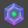

Tab Suspender Pro
PRO
0 MB
MEMORY FREED
Suspend tabs to free memory
0%
lighter
0
suspended
·
0
total
·
0
windows
Suspend All Tabs
Restore All
Whitelist
Focus Mode
PRO
⚡
0 tabs open = 0% bandwidth lost
Unlock Focus Mode
✓ One-time purchase
✓ 3,300+ focused workers
✓ Lifetime updates
🎯
Focus Mode Active
0
tabs suspended
Focusing on: Current Tab
Exit Focus Mode
0 tabs across 0 windows
All tabs
Active
Suspended
Loading...
×
Show details